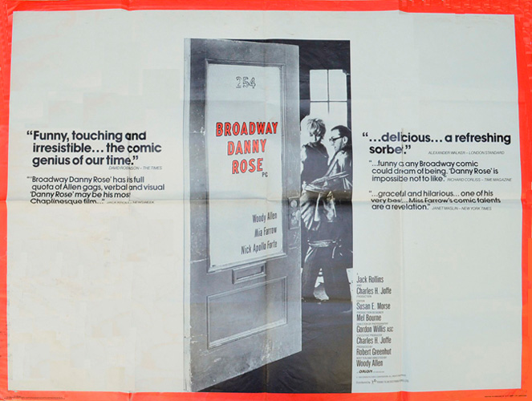
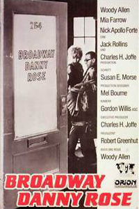
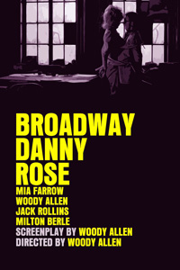
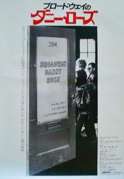

A hapless talent manager named Danny Rose, by helping a client, gets dragged into a love triangle involving the mob. His story is told in flashback, an anecdote shared amongst a group of comedians over lunch at New York's Carnegie Deli. Talent agent "Broadway" Danny Rose (Allen) represents various incompetent entertainers, including a one-armed juggler, blind xylophone players and the '50s washed-up lounge singer Lou Canova (Nick Apollo Forte), whose career is on the rebound and who becomes Rose's only hope for success.
Part caper, part-show biz satire, Broadway Danny Rose would make an excellent companion to Paper Moon; both are a delightful combination of nostalgia and cutting observations about human nature.
Robert De Niro and Sylvester Stallone both turned down the role of Lou Canova.
Mia Farrow's performance is superb and unlike anything else in her career: loud, brassy, and comically obnoxious.
"I don't wanna badmouth the kid, but he's a horrible, dishonest, immoral louse. And I say that with all due respect."
"The jokes are firmly embedded in plot and characterisation, and the film, shot by Gordon Willis in harsh black-and-white, looks terrific; but what makes it work so well is the unsentimental warmth pervading every frame." - Geoff Andrew : Time Out
"Woody Allen received well deserved Oscar nods as writer and director of this original b/w comedy about a talent agent down on his luck." - Emanuel Levy


